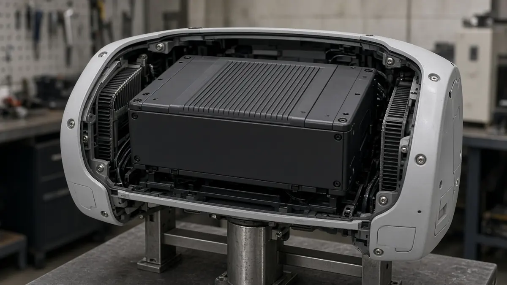
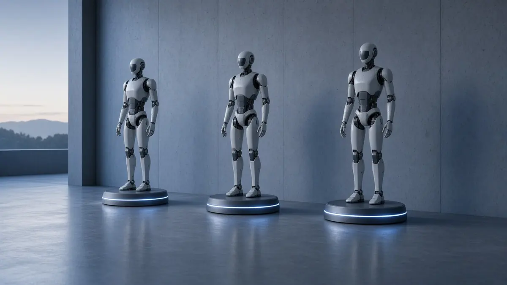

Explainers
What humanoid makers have published about runtime and recharge
Short answer: Three published humanoid runtimes sit between about 90 minutes and 4 hours on a single charge. Agility Robotics says the Digit 5 battery will run for 90 minutes and recharge in 9 minutes. 1X lists 4 hours for NEO. Unitree lists about 3 hours for the H2. Each figure is the company's own, and none is an independent test of a working shift.
Agility's release of 15 October 2026 says Nyobolt is supplying the Digit 5 pack. The company says 90 minutes of runtime and a 9-minute charge are a 10-to-1 run-to-charge ratio, up from a 2-to-1 ratio on Digit 4, and that the robot could then do more than 20 hours of work in a 24-hour day. The 20-hour figure is time on shift across repeated charges, not one battery cycle. Agility says early access to Digit 5 with this pack is expected in the first half of 2027, with wider availability over the following six to nine months. Digit 5's onboard computer and Pittsburgh plans are in our earlier report.

On its order page, 1X lists a NEO battery of 842 watt-hours, a runtime of 4 hours and a quick charge of 6 minutes for each hour of runtime. The page says that when NEO needs a charge, it plugs itself in. 1X also lists a purchase price of $20,000 or a subscription of $499 a month, and says US deliveries start in 2026. Those are statements on the product page, not a record of robots already delivered.
Unitree's H2 product page lists battery life of about 3 hours, a 15 amp-hour pack rated at 0.972 kilowatt-hours, and a maximum voltage of 75.6 volts, plus a quick-release battery and a charger. A footnote says the parameters can change with the scenario and the configuration. The same page lists the H2 at $29,900 before tax and shipping. A runtime on a spec sheet does not say whether the robot was walking, carrying a load or standing still. The H2 is the full-size Unitree humanoid in our H2-X coverage.
